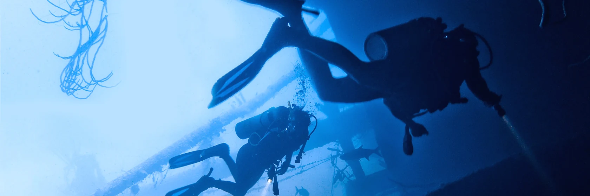
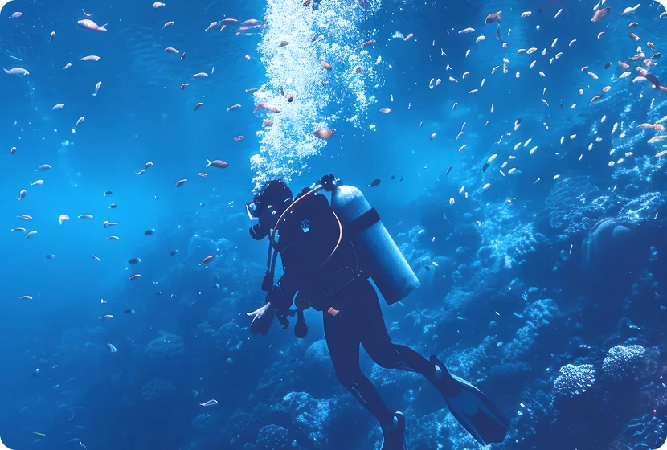
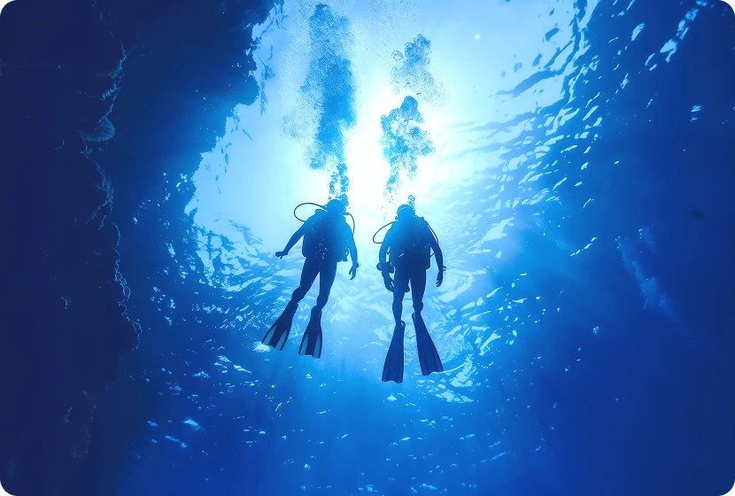
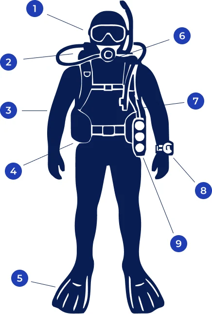

공기통을 메고 물속에서 자유롭게 호흡하며, 마치 수중 세계의 관찰자가 된 듯 긴 시간 동안 머무를 수 있습니다. 장비의 도움을 받아 체력 소모를 최소화하면서 산호초 사이사이를 구석구석 탐험하고, 거대한 해양 생물들과 눈을 맞추며 교감하는 유영의 즐거움을 선사합니다.
Key-Focus
호흡을 위한 기계적인 장비 조작과 안전 수칙을 익히는 것이 핵심입니다.
Recommendation
물속에 오래 머물며 풍경을 감상하고 싶은 분, 장비의 안정감을 선호하는 탐험가 타입에게 추천합니다.



물속을 보기 위해 쓰는 안경입니다. 눈과 코를 덮는 형태로 '마스크'라 부릅니다. 물속에서도 선명한 시야를 확보하는 장비입니다. 내부 공기층을 통해 굴절을 줄여 시야를 또렷하게 합니다.
고압의 공기를 호흡 가능한 압력으로 변환해주는 장비입니다. 수중에서도 자연스럽게 숨 쉴 수 있도록 안정적인 공기 공급을 제공합니다.
체온 유지와 피부 보호를 위해 입는 옷(웻슈트/드라이슈트)입니다. 체온을 유지하고 외부 환경으로부터 신체를 보호하는 장비입니다. 수온에 따라 다양한 두께와 종류로 선택할 수 있습니다.
물속으로 가라앉기 위해 허리에 차거나 BCD에 넣는 납 덩어리입니다. 몸의 과도한 부력을 줄이기 위해 착용하는 납 무게 장비입니다. 적절한 무게 조절로 안정적인 중성부력을 유지할 수 있습니다.
물속에서 추진력을 얻기 위해 발에 착용하는 장비입니다.물속에서 효율적인 추진력을 제공하는 장비입니다. 적은 힘으로도 빠르고 안정적인 이동을 가능하게 합니다.
수면에서 숨을 쉴 때 사용하는 대롱입니다.수면에서 얼굴을 물에 담근 상태로 호흡할 수 있게 해주는 장비입니다. 공기 소모를 줄이고 휴식 시 편리하게 사용할 수 있습니다.
공기를 주입하거나 배출해 부력을 조절하는 장비입니다. 수중에서 상승·하강과 중성부력 유지를 도와 안정적인 다이빙을 가능하게 합니다.
현재 수심, 잠수 시간, 무감압 한계 시간 등을 계산해 주는 필수 손목 장비입니다.수심, 시간, 감압 상태 등을 자동으로 계산해 보여주는 장비입니다. 안전한 다이빙을 위해 상승 속도와 휴식 시간을 안내합니다.
공기통에 남은 공기 압력(Bar/PSI)을 확인하는 계기판입니다.탱크에 남아있는 공기 압력을 실시간으로 확인하는 장비입니다. 다이빙 중 안전한 공기 관리와 계획적인 상승을 돕습니다.
다이빙은 한 번의 교육으로 끝나는 활동이 아니라 단계별 교육과 경험을 통해 성장하는 활동입니다. BlueBuddy와 함께 기초 교육부터 실제 바다에서의 실습, 그리고 프로 레벨까지 이어지는 교육 과정을 통해 안전하고 능숙한 다이버로 성장할 수 있습니다.
수중 세계로의 첫걸음 (수심18m 까지 가능)
다이빙의 기초 이론과 필수 수중 스킬을 익혀 전 세계 바다에서 수심 18m까지 자유롭게 유영할 수 있는 가장 기본적인 자격증입니다. 전문 강사와 함께 안전하게 호흡하는 법과 부력조절을 배웁니다.
평균 3~4일 (이론 교육 + 수영장 실습 + 해양 실습 4회)
장비 조립, 수중 호흡기 찾기, 마스크 물 빼기, 부력 조절 기초
탐험의 한계를 넓히는 즐거움 (수심30m까지 가능)
오픈워터 취득 후, 다양한 환경에서의 다이빙을 경험하며 수심 30m까지 더욱 역동적인 탐험을 즐길 수 있습니다. 더 넓은 시야와 다양한 해양 생물을 마주하고 다이빙 기술의 깊이를 더해보세요.
평균 2~3일 (이론 + 해양 실습 5회)
딥 다이빙(Deep), 수중 항법(Navigation)
보트 다이빙, 나이트 다이빙, 드리프트(조류) 다이빙, 수중 사진, 물고기 식별, 정밀 부력 조절(PPB), 난파선 다이빙
비상상황 대처 및 구조훈련으로 업그레이드
수중 및 수면에서의 비상 상황을 예방하고 대처하는 능력을 길러 더욱 신뢰받는 다이버로 거듭나는 필수 단계입니다. 문제 해결 능력을 키우는 구조 훈련을 통해 자신감을 얻고 바다에서 더욱 깊은 여유를 느껴보세요.
평균 3~4일 (이론 + 구조 시나리오 실습)
지친 다이버 돕기, 패닉 다이버 구조, 수중 사고 대처, 실종 다이버 수색
EFR(응급처치) 자격증: 자격 취득 전 24개월 이내의 응급처치 및 CPR 교육 이수 필요
바다를 이끄는 리더, 전문가의 길
풍부한 다이빙 경험과 지식을 바탕으로 다른 다이버들을 가이드하고 교육을 보조하는 프로 레벨의 첫 단추 입니다. 리더십을 발휘하여 푸른 심연의 아름다움을 널리 알리고 다이빙의 가치를 함께 나누는 전문가가 되어보세요.
최소 2주 ~ 수개월 (인턴십 형태 선호)
다이빙 사이트 브리핑 및 가이딩, 교육생 보조 및 감독, 수중 지도 제작, 다이빙 물리/생리 이론 마스터
최소 40회 이상의 로그기록(종료 시 60회 이상), 레스큐 다이버 자격 보유
ⓒ Copyright by JinGanJang